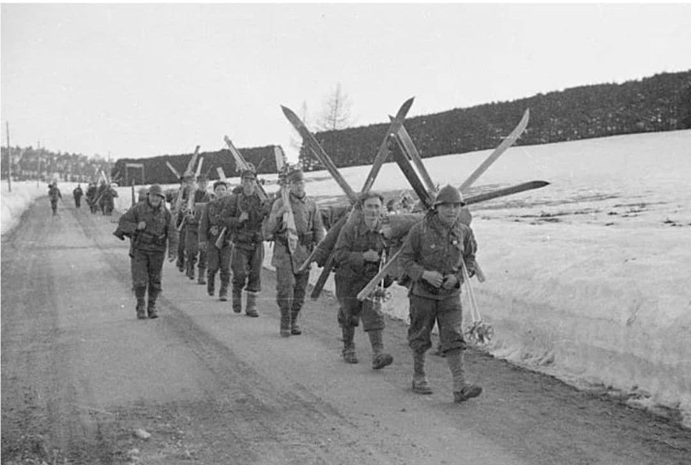
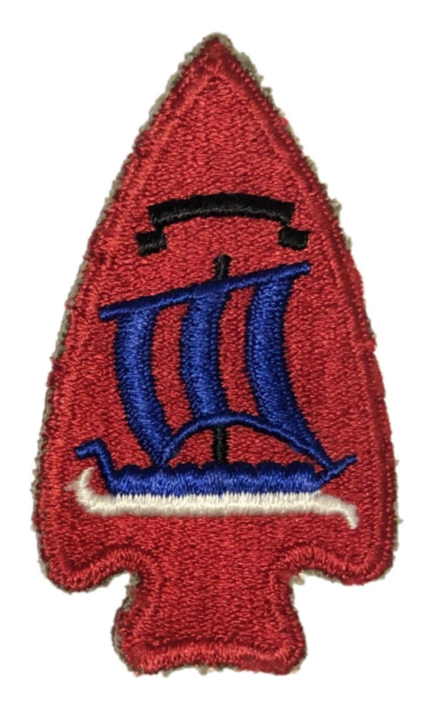
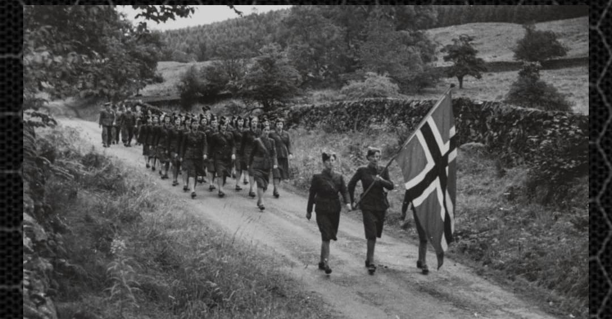

La résistance des fjords et des mers froides : de la campagne de 1940 aux commandos clandestins de la Compani Linge et la libération du grand Nord

Envahie par l'Allemagne nazie le 9 avril 1940 lors de l'opération *Weserübung*, la Norvège a opposé une résistance acharnée avant que le gouvernement et le roi Haakon VII ne choisissent de s'exiler à Londres. Dès lors, les Forces norvégiennes libres (regroupant l'armée de terre, la marine, l'aviation et les réseaux clandestins) n'ont cessé de combattre l'occupant.
Qu'il s'agisse des redoutables marins de la flotte marchande ravitaillant les Alliés, des saboteurs d'élite de la Compani Linge ou des troupes engagées dans la reconquête du Grand Nord, la contribution norvégienne à la victoire alliée a été cruciale.
Reconstituées sous l'autorité du haut commandement norvégien en Grande-Bretagne, les forces en exil intègrent rapidement des milliers de volontaires évadés de la Norvège occupée à bord de bateaux de pêche (les fameux Shetland Bus).
Leurs écussons et insignes arborent fièrement le lion norvégien à la hache d'or sur fond de gueules, symbole séculaire de souveraineté et de liberté nationale.

Formée au Royaume-Uni sous la direction du capitaine **Martin Linge**, cette unité de commandos et de sabotage spéciale (comprenant des figures légendaires comme Max Manus et Knut Haukelid) a mené des opérations d'une audace folle sur son propre sol.
Leurs faits d'armes les plus célèbres incluent la destruction de l'usine d'eau lourde de Vemork (opération *Gunnerside* en 1943), empêchant l'Allemagne nazie de se doter de l'arme atomique, ainsi que de multiples sabotages côtiers et actions de harcèlement en liaison avec le mouvement de résistance intérieur (*Milorg*).

La **Marine royale norvégienne** (Sjøforsvaret) a fourni l'une des contributions navales les plus importantes aux côtés de la Royal Navy, armant des corvettes, des destroyers et des vedettes rapides pour escorter les convois arctiques périlleux vers Murmansk et l'Union Soviétique.
À l'automne 1944, les troupes norvégiennes venues de Grande-Bretagne participent activement à la libération de la province du Finnmark dans le nord de la Norvège, face à une armée allemande en retraite appliquant la politique de la terre brûlée.
Page du Musée HOP WW2 – Section Unités & Divisions